Undergraduate Coursework · Rose-Hulman
Undergraduate Coursework · Rose-Hulman
Fuzzy-logic controllers for autonomous parking.
Rule-based Mamdani fuzzy-logic controllers that mimic a Lexus autonomously backing into a parking space and parallel parking, written as the rules a human driver follows rather than derived from a model.
The idea
Fuzzy control is the opposite of learning a controller from data. Instead you write down the rules a human driver follows in words, and the controller interpolates smoothly between them. Rather than a hard threshold, the car is partly "too far left" and partly "centered" at the same time, and the rules blend accordingly.
The vehicle model has 3 degrees of freedom, the center of the rear axle (xB, yB) and the heading angle psi, and the controller output is the steering angle beta.
Backing into a space
For the back-parking case there are three input membership functions, for xB, yB and psi, and one output membership function for beta. The controller is formulated with 27 Mamdani rules.
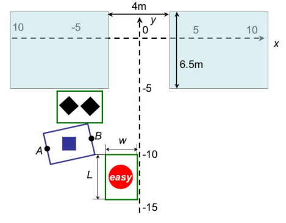
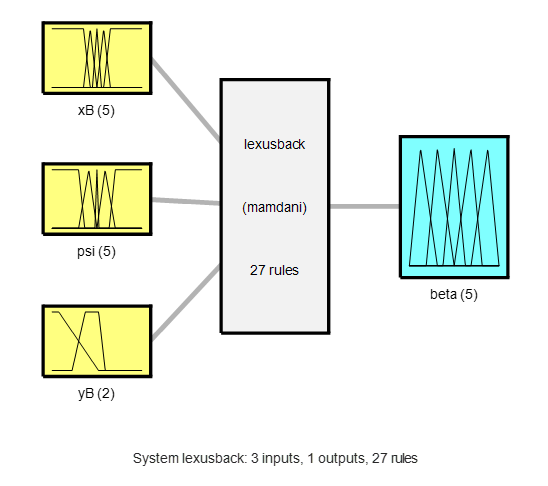
The controller is robust enough to park from a range of starting positions and headings, including the double-diamond case where the car has to swing out before it can come back in.
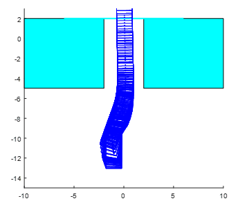
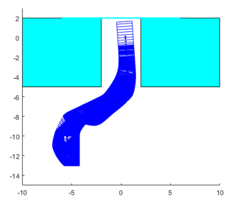
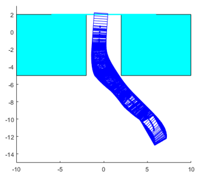
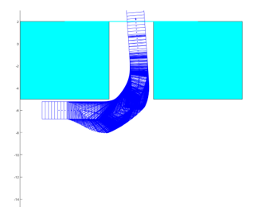
Parallel parking
For the parallel-parking case there are four input membership functions, for xB, yB, xa and psi, and one output membership function for beta, where xa is the front-axle displacement in the x-direction. The extra input matters because parallel parking is a tighter maneuver: the controller has to track the front of the car as well as the back to avoid clipping the vehicle ahead. This controller is formulated with 43 Mamdani rules.
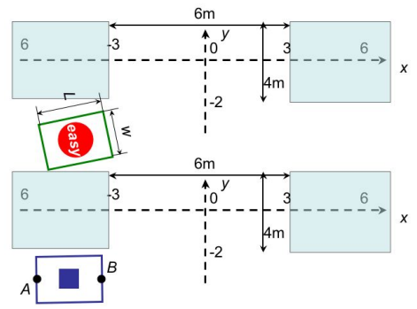
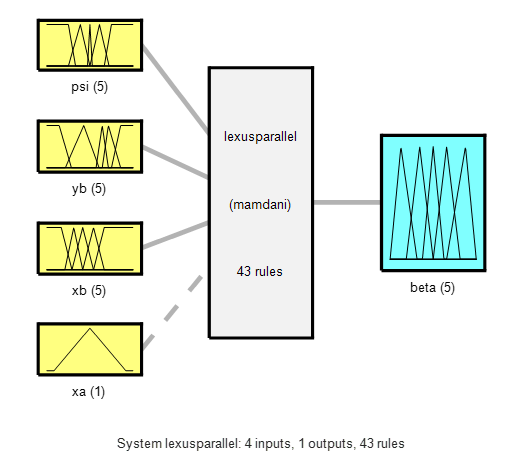
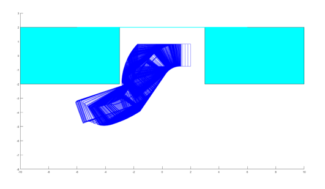
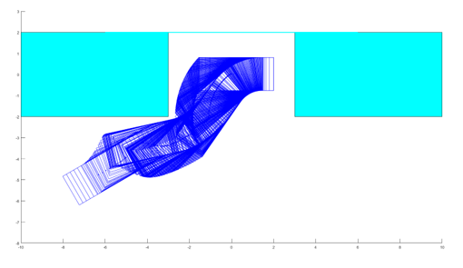
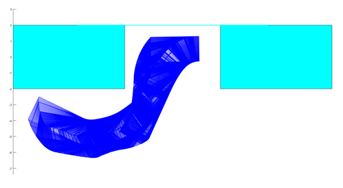
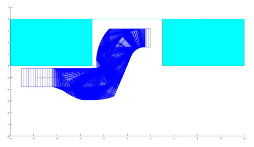